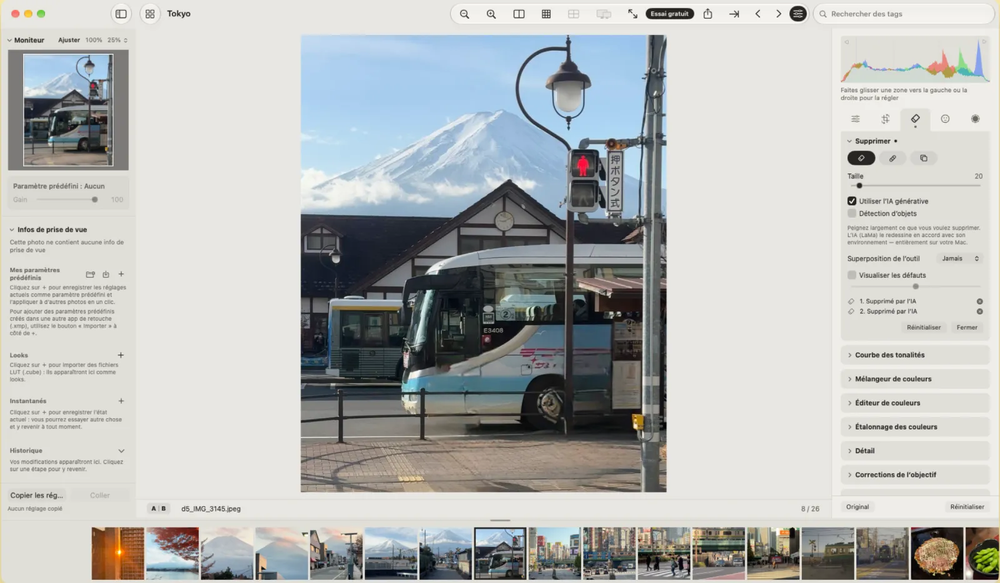

UNE IA QUI TOURNE SUR VOTRE ORDINATEUR
Toutes les fonctions d’IA tournent sur votre ordinateur. Vos photos ne sont jamais envoyées.

Tri par IA
Regroupe les quasi-doublons et les rafales en scènes et choisit la meilleure de chacune selon la netteté, les yeux fermés, l’expression et l’exposition écrêtée. C’est vous qui décidez quand les choix deviennent des notes.
Tags automatiques
Propose jusqu’à 3 tags par photo parmi 22 catégories du quotidien. Cliquez pour accepter ceux qui vous conviennent.
Suppression IA
Peignez sur un élément ou cliquez sur une personne ou un objet : la zone est remplie pour se fondre dans le décor. Sans IA générative, le remplissage se fait à partir des alentours.
Correction, clonage et yeux rouges
Des pinceaux pour les petites retouches, et une vue des poussières qui fait ressortir les taches du capteur.
Retouche du visage et de la peau
Lisser la peau, uniformiser le teint en gardant la texture, et remodeler visage, mâchoire, yeux, nez et lèvres. Chaque visage peut être exclu.
Imperfections sur toute une séance
Retrouve la même personne dans les photos sélectionnées et efface ses imperfections dans toutes. Une seule annulation rétablit tout le lot.
Éditeur RAW rapide par dossier
Téléchargement gratuit, avec 30 jours d’essai gratuit de toutes les fonctions. Nécessite macOS 26 ou version ultérieure. Windows 10 (64 bits) ou version ultérieure.